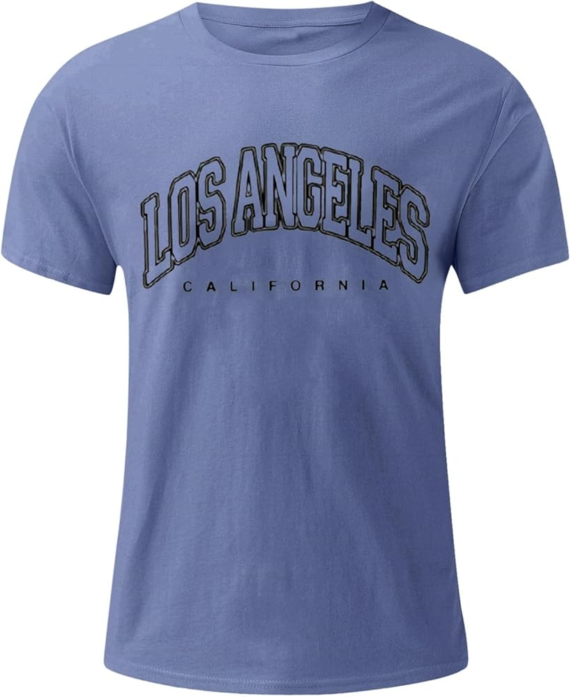

Sobre el proyecto M&M Studio
M&M Studio es una empresa ficticia creada para el proyecto. Su objetivo es ofrecer servicios personalizados de creación y gestión de identidad digital, consultoría de imagen y personal branding.
El proyecto nace por la necesidad de muchas personas y empresas de mejorar su imagen en redes sociales, conseguir más visibilidad y transmitir una imagen más profesional.
Datos principales
Autores: Marius Bumbu y Marcos Valero
Ubicación propuesta: Barrio de Salamanca, Madrid
Local: 150 m², oficina y estudio fotográfico

Parte técnica del TFG
| Elemento | Uso en el proyecto |
|---|---|
| HTML, CSS y JavaScript | Desarrollo de la web corporativa responsive |
| Nginx | Servidor web para publicar la página |
| Docker y Docker Compose | Contenerización y despliegue del servicio |
| Backups | Copias de seguridad de la web y configuración |
| Monitorización | Control del estado del servicio con herramientas como Uptime Kuma |
| HTTPS y seguridad | Acceso seguro, firewall, cabeceras y buenas prácticas |
DAFO resumido
Fortalezas
- Buena ubicación en Madrid.
- Estudio fotográfico integrado.
- Servicios personalizados y premium.
Oportunidades
- Subvenciones para pymes.
- Colaboraciones con marcas e influencers.
- Crecimiento del personal branding.
Debilidades
- Alquiler elevado.
- Empresa nueva sin clientes estables.
- Dependencia de tendencias digitales.
Amenazas
- Competencia en marketing digital.
- Cambios en redes sociales e IA.
- Situación económica del cliente.